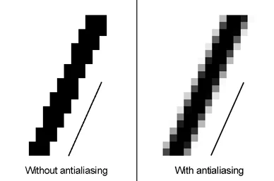

Raytracing in one weekend in C++
GitHub Repository
Welcome to my adventure following the raytracing in one weekend series in C++.
Part 5
Camera management
Adjusting our point of view
Camera.h
#pragma once
#include "Color.h"
#include "Hittable.h"
class Camera
{
public:
Camera() = default;
Camera(double imageWidth, double ratio): aspectRatio(ratio), width(imageWidth){}
void Render(const Hittable& rWorld);
private:
int height;
double aspectRatio, width;
Position center, originPixelLocation;
Vector3 pixelDeltaX, pixelDeltaY;
void Initialize();
Color RayColor(const Ray& rRay, const Hittable& rWorld) const;
};Camera.cpp
void Camera::Render(const Hittable& rWorld)
{
Initialize();
cout << "P3\n" << width << ' ' << height << "\n255\n";
for(int y = 0; y < height; y ++)
{
clog << "Progress : " << (y*100/height) << " %\n" << flush;
for (int x = 0; x < width; x ++)
{
Position pixelCenter = originPixelLocation + (x * pixelDeltaX) + (y * pixelDeltaY);
Vector3 direction = pixelCenter - center;
Ray ray(center, direction);
Color pixel = RayColor(ray, rWorld);
WriteColor(cout, pixel);
}
}
clog << "Done! You can open your file now :) \n";
}
void Camera::Initialize()
{
height = static_cast<int>(width / aspectRatio);
if(height < 1) height = 1;
center = Position(0, 0, 0);
double focalLength = 1;
double viewportHeight = 2;
double viewportWidth = viewportHeight * (static_cast<double>(width)/height);
Vector3 viewportX = Vector3(viewportWidth, 0, 0);
Vector3 viewportY = Vector3(0, -viewportHeight, 0); // invert Y
//Delta vector between pixels
pixelDeltaX = viewportX / width;
pixelDeltaY = viewportY / height;
//Position of the top left pixel
Vector3 viewportOrigin = center - Vector3(0, 0, focalLength) - viewportX / 2 - viewportY / 2;
originPixelLocation = viewportOrigin + 0.5 * (pixelDeltaX + pixelDeltaY);
}
Color Camera::RayColor(const Ray& rRay, const Hittable& rWorld) const
{
HitInfo hitInfo;
if (rWorld.Hit(rRay, Interval(0, infinity), hitInfo)) {
return 0.5 * (hitInfo.normal + Color(1,1,1));
}
Vector3 unitDirection = Unit(rRay.GetDirection());
double blue = 0.5 * (unitDirection.y + 1.0);
return (1.0 - blue) * Color(1.0, 1.0, 1.0) + blue * Color (0.5, 0.7, 1.0);
}
now to clean up the main
Raytracing.cpp
#include "Camera.h"
#include "HittableCollection.h"
#include "Sphere.h"
using namespace std;
int main(int argc, char* argv[])
{
// World
HittableCollection world;
world.Add(make_shared<Sphere>(Position(0,0,-1), 0.5));
world.Add(make_shared<Sphere>(Position(0,-100.5,-1), 100));
// Render
Camera camera(400, 16.0/9.0);
camera.Render(world);
return 0;
}
Anti-aliasing
the smooth stuff
Remember :
- Coloring all faces traversed with the same color means it's aliased
- Coloring faces traversed with an alpha depending on how much it goes through is unaliased
Like so :
Random Number
Utility.h
#pragma once
#include <cmath>
#include <limits>
#include <memory>
#include "Ray.h"
#include <cstdlib>
...
inline double RandomDouble()
{
return rand() / (RAND_MAX + 1.0);
}
inline double RandomDouble(double min, double max)
{
return min + (max - min) * RandomDouble();
}
Interval.h
double Clamp(double x) const
{
return x < min ? min : x > max ? max : x;
}
Color.h
#include "Interval.h"
inline void WriteColor(std::ostream &out, Color pixel, int sampleCount)
{
double scale = 1.0 / sampleCount;
double r = pixel.x * scale;
double g = pixel.y * scale;
double b = pixel.z * scale;
// Write the translated [0,255] value of each color component.
static const Interval intensity(0.000, 0.999);
out << static_cast<int>(255.999 * intensity.Clamp(r)) << ' '
<< static_cast<int>(255.999 * intensity.Clamp(g)) << ' '
<< static_cast<int>(255.999 * intensity.Clamp(b)) << '\n';
}
Then for the camera
Camera.h
class Camera
{
public:
Camera() = default;
Camera(double imageWidth, double ratio, int samplePerPixel = 10):
aspectRatio(ratio), width(imageWidth), sampleCount(samplePerPixel){}
void Render(const Hittable& rWorld);
private:
int height;
double aspectRatio, width;
int sampleCount;
Position center, originPixelLocation;
Vector3 pixelDeltaX, pixelDeltaY;
void Initialize();
Color RayColor(const Ray& rRay, const Hittable& rWorld) const;
Ray GetRay(int x, int y) const;
Vector3 PixelSampleSquared() const;
};
Camera.cpp
void Camera::Render(const Hittable& rWorld)
{
Initialize();
cout << "P3\n" << width << ' ' << height << "\n255\n";
for(int y = 0; y < height; y ++)
{
clog << "Progress : " << (y*100/height) << " %\n" << flush;
for (int x = 0; x < width; x ++)
{
Color pixel(0,0,0);
for(int sample = 0; sample < sampleCount; sample ++)
{
Ray ray = GetRay(x, y);
pixel += RayColor(ray, rWorld);
}
WriteColor(cout, pixel, sampleCount);
}
}
clog << "Done! You can open your file now :)\n";
}
Ray Camera::GetRay(int x, int y) const
{
// Get a randomly sampled camera ray for the pixel at location i, j.
Vector3 pixelCenter = originPixelLocation + (x * pixelDeltaX) + (y * pixelDeltaY);
Vector3 pixelSample = pixelCenter + PixelSampleSquared();
Position rayOrigin = center;
Vector3 rayDirection = pixelSample - rayOrigin;
return Ray(rayOrigin, rayDirection);
}
Vector3 Camera::PixelSampleSquared() const
{
// Returns a random point in the square around a pixel at the origin
double pX = -0.5 + RandomDouble();
double pY = -0.5 + RandomDouble();
return (pX * pixelDeltaX) + (pY * pixelDeltaY);
}
Now to add the sampling count
Raytracing.cpp
int main(int argc, char* argv[])
{
// World
HittableCollection world;
world.Add(make_shared<Sphere>(Position(0,0,-1), 0.5));
world.Add(make_shared<Sphere>(Position(0,-100.5,-1), 100));
// Render
Camera camera(400, 16.0/9.0, 100);
camera.Render(world);
return 0;
}